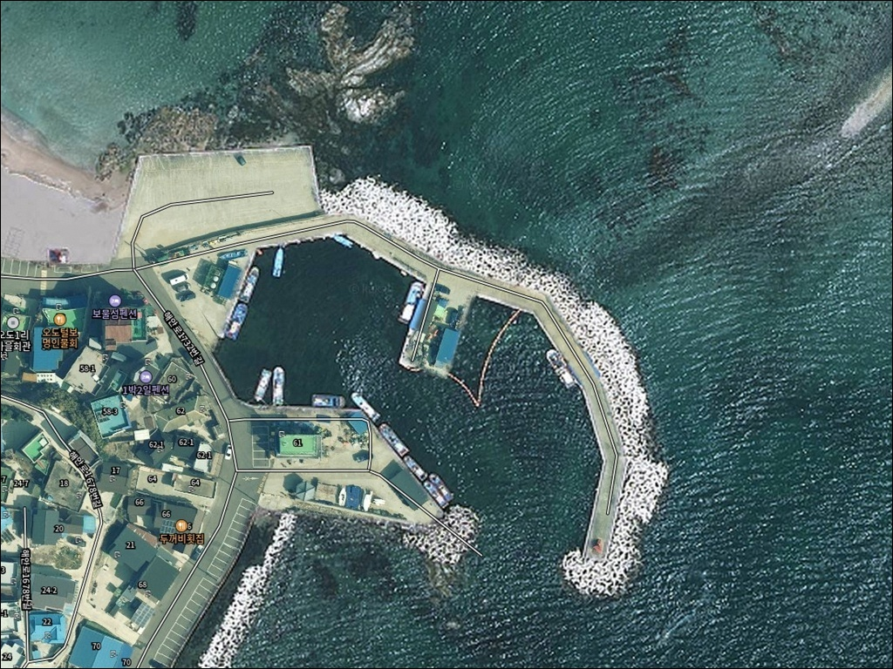
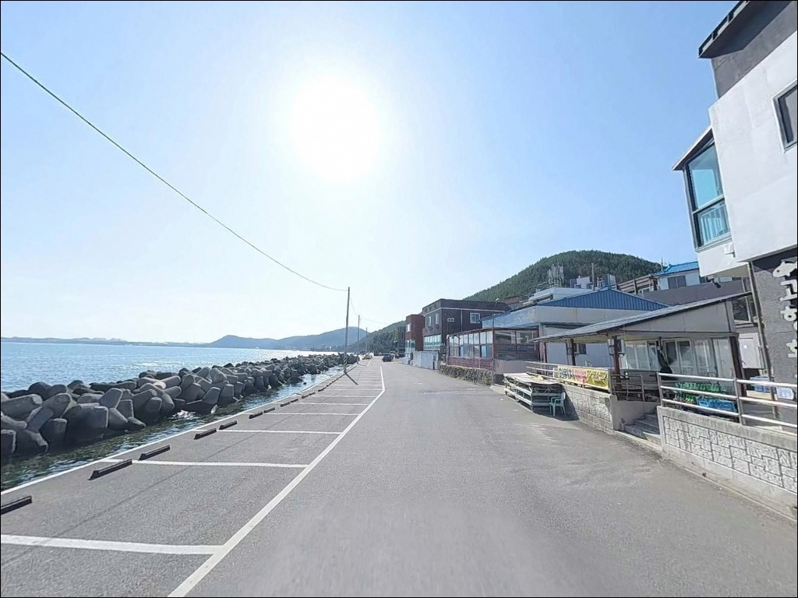
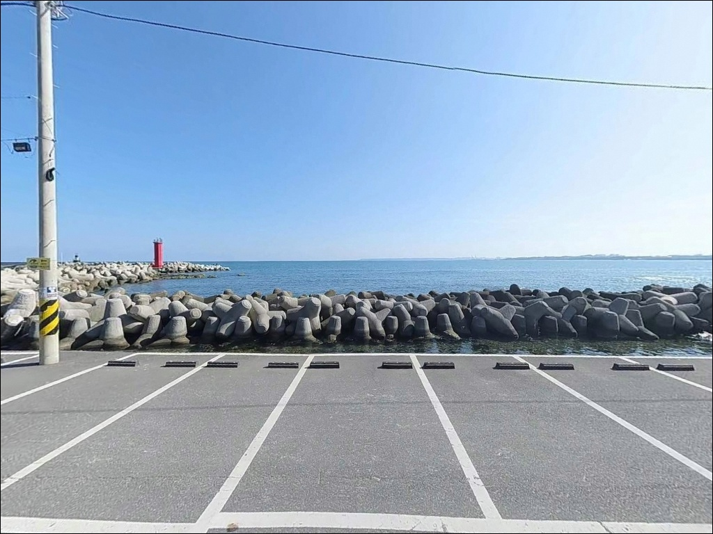
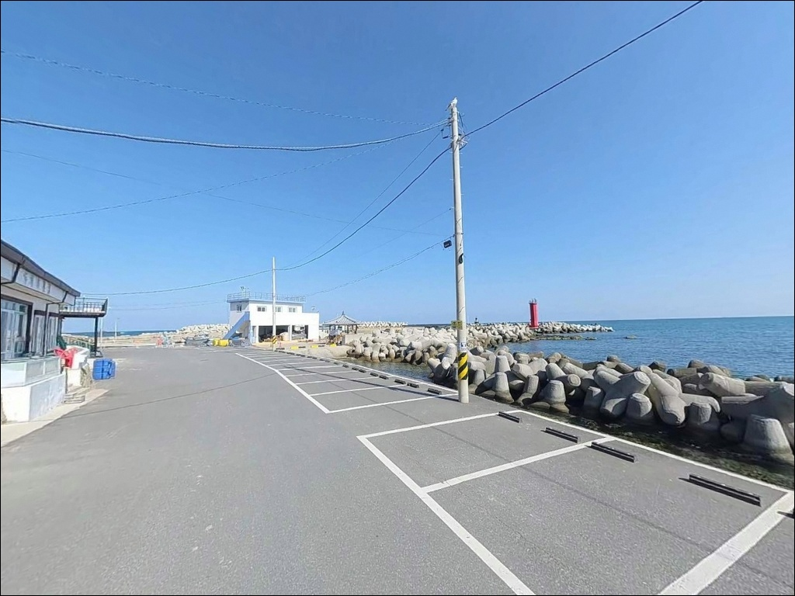
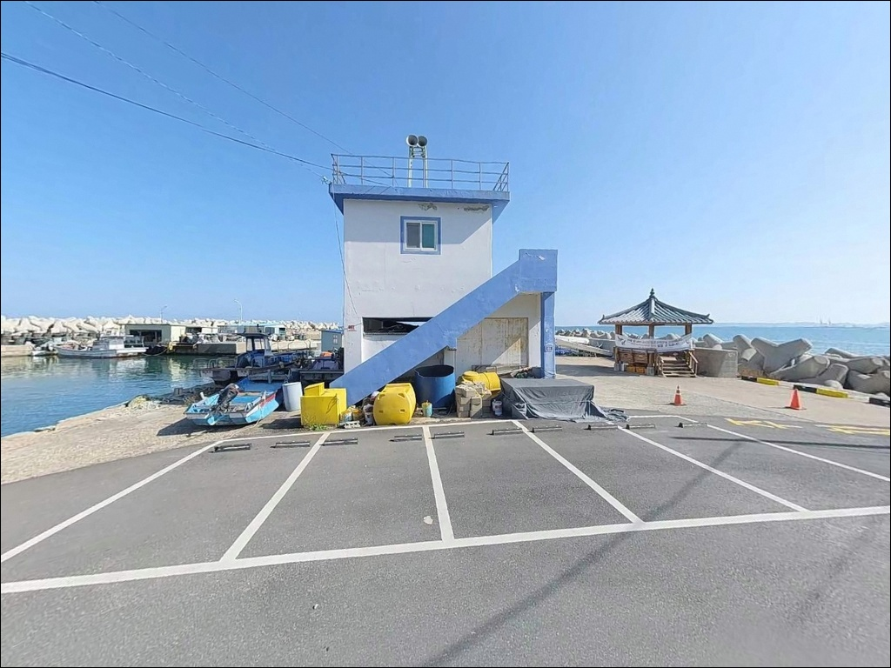
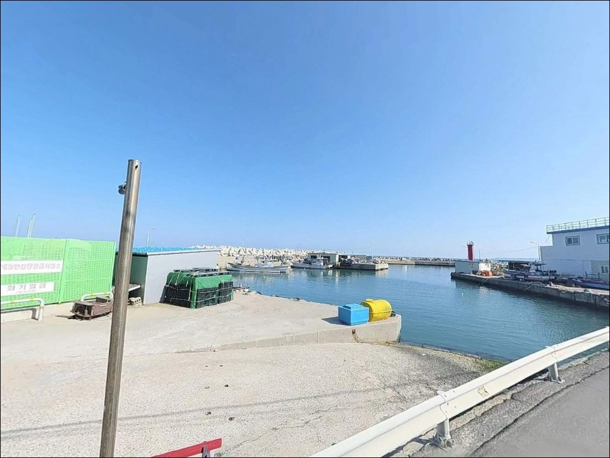
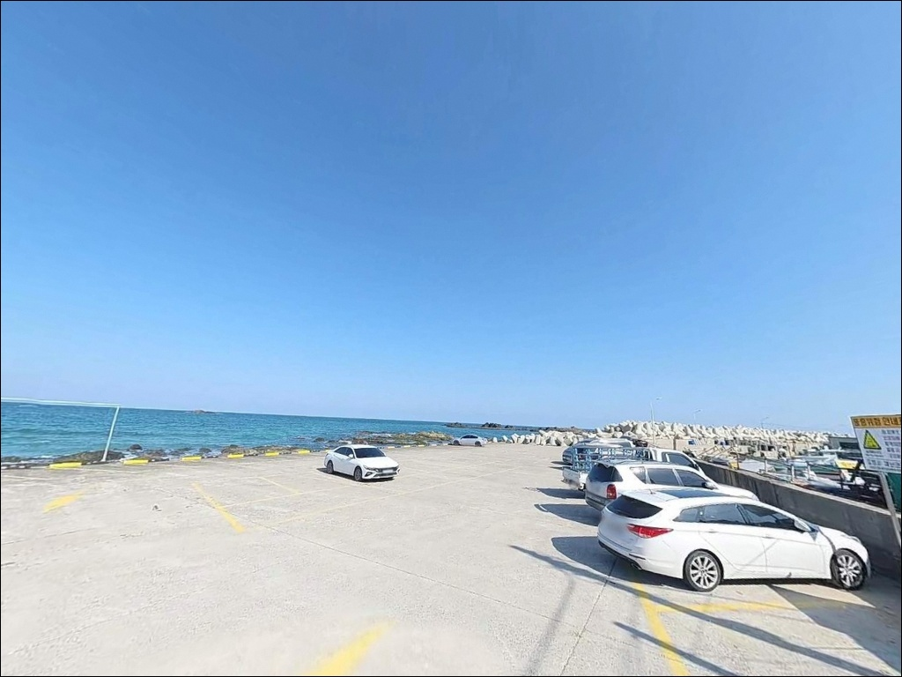
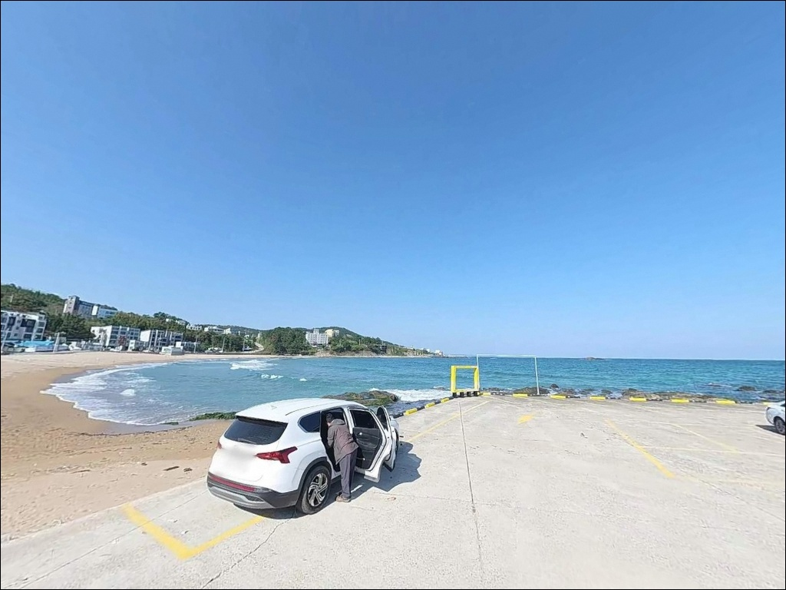
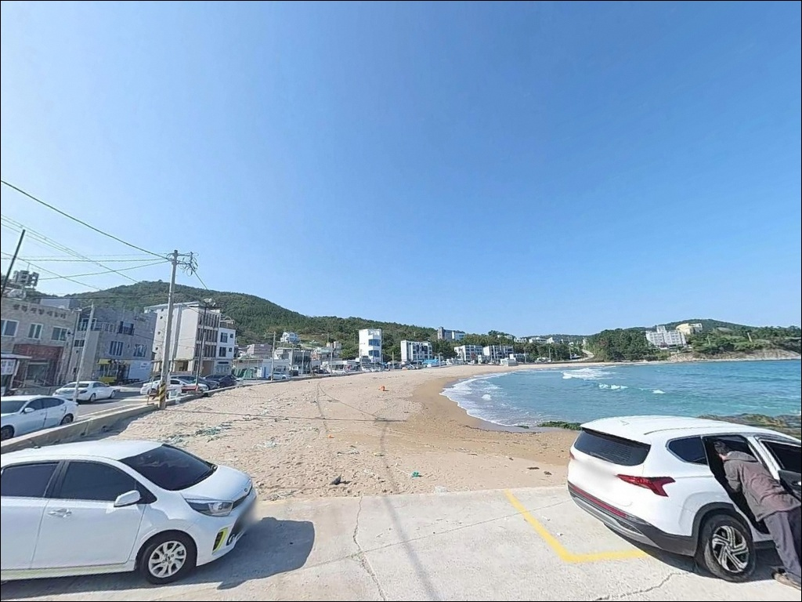

이 페이지에는 광고(제휴 링크 포함)가 있으며, 광고 링크를 통해 구매하면 운영자가 판매 수익 또는 수수료를 받을 수 있습니다. 포인트 사진: 카카오맵 스카이뷰·로드뷰. 이 페이지의 지도·사진 이미지는 카카오맵의 실제 서비스 이미지와 다를 수 있습니다.

오도리간이해수욕장 방파제
경북 포항시 북구 흥해읍 오도리 325
만조 타이밍을 확인하지 않고 오도리를 찾으면
잘피밭이 드러난 얕은 바닥을
에기로 긁는 상황이 됩니다.
이 포인트는 간조 전후에 수심이 급격히 줄어
낚시 가능 시간이 만조 기준 2~3시간으로 좁아지는
구조를 가지고 있습니다.
이 글은 오도리간이해수욕장의
물때 기반 진입 판단, 잘피밭 에깅 공략 구조,
진입 동선과 차박 여건에 집중합니다.
조황 단정이나 특정 어종 보장은
이 글의 범위에 포함되지 않습니다.

오도리간이해수욕장은 흥해읍 해안선에서
월포해수욕장(북)과 칠포해수욕장(남) 사이에
자리하고 있습니다.
해안로1732번길을 따라 해수욕장 인근까지
포장도로가 연결되며,
급경사나 비포장 구간 없이
대형 SUV와 캠핑카도 진입이 가능한 구조입니다.
해수욕장 전면에 지정 주차장이 무료로 운영되며,
방파제 인접 공터와 해수욕장 뒤 도로변 공터가
추가 주차 후보로 활용됩니다.
주차장 내 회차 공간이 충분해
초행 차량도 후진 진출 부담이 적은 편입니다.
방파제는 해수욕장 북측에 소형으로 형성되어 있으며,
외항은 테트라포트, 내항은 석축 구조입니다.
해변 중앙에는 작은 바위섬(오도)이 있어
조류가 갈라지는 지형을 만들며,
해수욕장 북쪽 해안에는
헬기장 갯바위가 별도 포인트로 존재합니다.

차박 거점으로 실제 활용되는 구간은
해수욕장 뒤 도로변 공터입니다.
바다를 정면으로 바라보는 평탄지 구조로,
수십 대가 동시에 주차 가능한 공간이 확보됩니다.
다만 전면 주차장 내
캠핑카·텐트 설치는 제한되어 있어,
장박 형태의 체류 방식을 계획한다면
출발 전 해당 구역 규정을 먼저 확인해야 합니다.
오도1리 마을에는 카페와 펜션이 해안가를 따라
여러 곳 입점해 있어
야간에도 주변 조명이 일정 수준 유지됩니다.
완전한 고립형 차박 분위기가 아니라
관광형 해변의 활기찬 분위기에 가깝습니다.
프라이버시는 비수기(9~6월)에 양호하고,
7~8월 성수기에는 유동 인구가 늘어나
낚시 시간대 조율이 필요합니다.
동해안 특성상 너울성 파도가
예고 없이 해안으로 밀려들 수 있습니다.
차박 체류 중 기상 변화가 감지되면
방파제와 갯바위에서 즉시 거리를 두고,
해변 평탄지로 대피하는 것이 기본 판단입니다.

오도리간이해수욕장은 인프라 면에서
동해안 해변형 포인트 중 상당히 편리한 편입니다.
해수욕장 내 공중화장실(수돗가 포함)이 있으며,
도보권 내에 편의점과 식당이
여러 곳 확인됩니다.
해안 조망 카페도 7개 이상 오도리 마을에
입점해 있어 음료와 식사 조달이 편합니다.
주유소는 흥해읍 방면으로 이동이 필요하며,
응급 상황 발생 시 흥해읍 소재 의원과 약국이
차량으로 이동 가능한 거리에 위치합니다.
대형 병원은 포항 시내 방향으로
20~30분 소요되니
비상약품은 사전에 준비해 가는 것이 기본입니다.

오도리간이해수욕장에서 가장 먼저 챙길 것은
물때 확인입니다.
해변 수심이 전반적으로 얕아
간조 전후에는 에기가 바닥을 끌게 됩니다.
바다타임에서 당일 만조 시각을 확인하고
만조 전후 2~3시간을 집중 공략 시간대로
계산해 출발 시각을 맞추는 것이 기본입니다.
에깅을 주력으로 계획한다면
바지장화가 필수 장비입니다.
잘피밭 구간은 무릎 깊이까지 물속에 진입해
에기를 투척하는 방식이 이 포인트에서
확립된 패턴이며,
만조 시 수위 상승 속도가 빠를 수 있으니
발밑 수심 변화를 수시로 확인해야 합니다.
해수욕장 시즌(7~8월) 중
낚시는 피서객과 동선 충돌이 발생하는 경우가 많습니다.
이 기간에 방문한다면 이른 새벽 또는
오후 7시 이후를 활용하는 것이 현실적입니다.
수중여와 갯바위 구간은
동해안 너울 특성상 기상 악화 시
출입을 삼가는 것이 원칙입니다.
출조 전 오도리 조황, 월포 에깅 조황으로
검색해 보시기 바랍니다.

오도리간이해수욕장은 소하천이 바다로 유입되는
기수역 지점에 자리하고 있습니다.
해수욕장 정면과 좌우로 수중여가 분포하며,
그 주변에는 잘피밭이 넓게 형성됩니다.
이 잘피밭이 오도리를 동해 에깅 포인트 중
다른 곳과 구별되는 핵심 조건으로 만들며,
산란 시즌 이후 가을까지 무늬오징어가
지속적으로 머무는 구조를 형성합니다.
수심은 해변 중앙부에서 2~4m 수준이며,
방파제 끝단과 갯바위 주변에서 5~8m 이상으로
깊어지는 변화를 보입니다.
해변에서 파도가 있는 날에는
연안까지 어군이 접근하는 경향이 있어
원거리보다 중근거리 공략이
유리한 날이 생깁니다.
조류는 전반적으로 약한 편이라
조류가 정체되어도 입질을 기대할 수 있는
지형 조건입니다.
오도리간이해수욕장은 잘피밭과 기수역이 결합된 구조로,
무늬오징어 에깅에서 동해 대표 조건 중 하나로 꼽힙니다.

이 포인트의 핵심 방식은 에깅입니다.
해수욕장 중앙부 잘피밭 구간을 향해
바지장화를 착용하고 무릎 깊이까지 진입한 뒤
에기를 투척하는 패턴이 현지에서 자리 잡혀 있습니다.
가을철 무늬오징어 에깅 시즌에 집중도가 높으며,
야간에는 연안으로 접근하는 개체를
해변 가장자리에서 공략하는 방식도 유효합니다.
원투낚시는 모래 바닥 지형을 활용하는
현지인 주력 방식입니다.
성대와 보리멸이 주요 대상어이며,
해변 전 구간에서 캐스팅이 가능해
초보 낚시꾼도 큰 무리 없이 접근할 수 있습니다.
만조 전후를 노려 채비를 먼 곳으로 보내는
방식이 이 지형에 잘 맞습니다.
루어낚시는 기수역 특성을 활용한 농어 공략에
적합한 방식입니다.
야간에 해수욕장 좌우 수중여 경계를 따라
미노우 계열 루어를 흘리는 패턴으로 운용하며,
어둠이 깔리고 나서 입질 빈도가 높아집니다.
찌낚시는 방파제 끝단과 수중여 경계 구간에서
감성돔과 벵에돔을 대상으로
조류 흐름이 살아나는 타이밍에 집중하면
운용 가능한 조건이 형성됩니다.
가을철에는 광어 루어낚시도 성행합니다.
만조 전후 2~3시간이 이 포인트의 실질적 낚시 시간이며,
그 외 시간대는 수심이 낚시를 지탱하지 못합니다.

오도리 수심이 간조로 낮아졌거나
주차 공간이 이미 차있을 때
첫 번째 대안은 월포방파제입니다.
북쪽으로 약 2km 거리에 위치하며
동일 흥해읍 해안선에서 기수역 조건이 유사합니다.
방파제 콧부리에서 해수욕장 방면을
에깅으로 노리는 패턴이 확립되어 있고,
방파제 규모가 커 외항 테트라포트 구간에서
벵에돔·무늬오징어·농어 공략이 가능합니다.
남쪽으로 약 2~3km 이동하면
칠포방파제(칠포항)가 있습니다.
내외항 구분이 명확한 방파제 구조로,
외항 암초 구간 수심이 6m 이상 확보됩니다.
감성돔·벵에돔·무늬오징어 모두 대응 가능하며,
조류 소통이 오도리보다 원활한 편입니다.
방파제 낚시의 다양성을 원한다면
이쪽이 더 전문적인 구조를 갖추고 있습니다.
차박 대안으로는
이가리간이해변 인근 주차장이 꼽힙니다.
오도리보다 유동 인구가 적어
프라이버시 확보에 유리한 분위기입니다.

기수역과 잘피밭이 결합된 해변형 에깅 포인트를
찾는 낚시인이라면
오도리간이해수욕장은 동해 북부권에서
드물게 갖춰진 조건을 제공합니다.
원투낚시와 에깅을 한 장소에서 병행할 수 있고,
야간에는 루어와 찌낚시까지 선택 폭이 넓어집니다.
반면 물때 계산 없이 간조에 도착하거나,
에깅 진입 시 바지장화 없이 해변 가장자리만 노리면
이 포인트의 핵심 구간을 놓치는 결과가 됩니다.
만조 타이밍, 바지장화, 기상 확인,
이 세 가지를 갖추고 간다면
흥해읍 해안선에서 가장 개성 있는
생활 낚시터로 기억될 포인트입니다.
편의시설이 충실한 해변 공터에서
차를 세우고 만조 타이밍을 기다리다
잘피밭으로 걸어 들어가는 에깅 루틴은,
포항 북구 해안선에서 만나기 어려운
조용한 낚시 여행의 방식입니다.